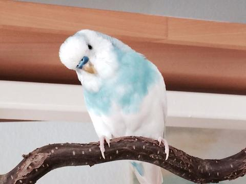

Introduction
 Hello,
Welcome to Feathers Aviary!
Hello,
Welcome to Feathers Aviary!
Hello,
Welcome to Feathers Aviary!

The little budgie bird is one of the most popular pets in the world,
ranking just behind dogs and cats, and it's no wonder.
This affectionate, cute bird is small and inexpensive,
and if trained properly a budgie can mimic human speech.
The origin of its formal name―budgerigar―is a mystery,
but by any name, this little bird is a charming companion for most pet owners.
Budgies aren't all fun and games, though, so before you bring one home,
make sure you're not in for any surprises. Here are some key things to know about budgie birds.
 context
context
 context
context
 context
context